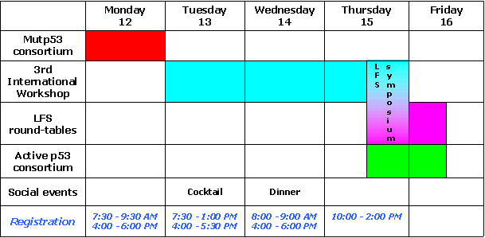

Lectures:
Maria-Isabel ACHATZ, Sao Paolo, Brazil
Patricia Ashton-Prolla, Porto Alegre, Brazil
Jiri BARTEK, Copenhagen, Denmark
Jill BIRCH, Manchester, UK
Giovanni BLANDINO, Rome, Italy
Anne-Lise BØRRESEN-DALE, Oslo, Norway
Jean-Christophe BOURDON, Dundee, UK
Sumitra DEB, Richmond, USA
Giannino DEL SAL, Trieste, Italy
Wolfgang DEPPERT, Hamburg, Germany
Sir Alan FERSHT, Cambridge, UK
Thierry FREBOURG, Rouen, France
Judy GARBER, Boston, USA
Pierre HAINAUT, Lyon, France
Curtis C. HARRIS, Bethesda, USA
Aart JOCHEMSEN, Leiden, The Netherlands
Jeffrey LAWRENCE, Pleasanton, USA
Laurent LE CAM, Montpellier, France
|
|
Gigi LOZANO, Houston, USA
David MALKIN, Toronto, Canada
Jo MILNER, York, UK
Ute MOLL, New York, USA
Magali OLIVIER, Lyon, France
Moshe OREN, Rehovot, Israel
Alain PUISIEUX, Lyon, France
Naznee RAHMAN, Sutton UK
Mike RESNICK, Research Triangle Park, USA
Varda ROTTER, Rehovot, Israel
Galina SELIVANOVA, Stockholm, Sweden
Neil SENZER, Dallas, USA
Louise STRONG, Houston, USA
Sapna SYNGAL, Boston, USA
Matthias THEOBALD, Utrecht, The Netherlands
Karen VOUSDEN, Glasgow, UK
Geoffrey WAHL, La Jolla, USA
Klas WIMAN, Stockholm, Sweden
|
Short communications:
Rachel BECKERMAN, New York, USA
Gianluca BOSSI, Rome, Italy
Ygal HAUPT, Jerusalem, Isreal
George HINKAL, Houston, USA
Ella KIM, Gottingen, Germany
Pierre ROUX, Montpellier, France
Genrich TOLSTONOG, Hamburg, Germnay
Catherine WHIBLEY, Leeds, UK
|
The programme will also include 42 posters.
Marathon schedule:

|